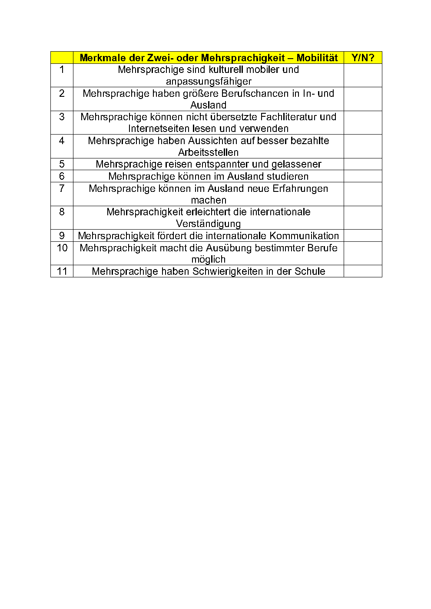
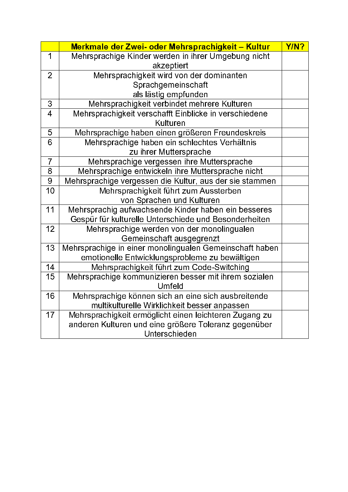
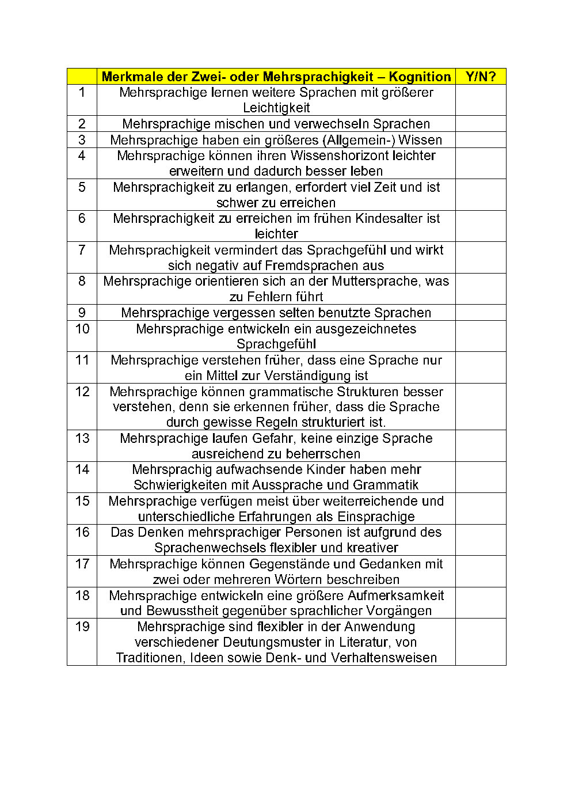
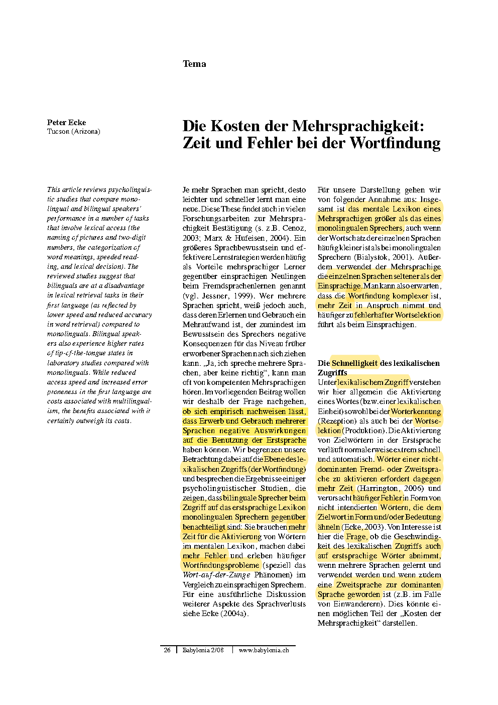

Error in knitr::include_graphics("pictures/tip-of-the-tongue1-1.png"): Cannot find the file(s): "pictures/tip-of-the-tongue1-1.png"4 Vor- und Nachteile der Mehrsprachigkeit
Zwei- oder Mehrsprachigkeit hat nach Ansicht vieler Menschen mehrere Vorteile. Aber viele Menschen wachsen nicht zwei- oder mehrsprachig auf. Deshalb erhebt sich nicht nur die Frage, welche Vorteile Mehrsprachigkeit hat, sondern auch, ob es gewisse Nachteile gibt, die Mehrsprachigkeitsbestreben hemmen oder sogar verhindern.
Hier folgt eine Liste von Behauptungen zur Mehrsprachigkeit. Beurteilen Sie, welche Behauptungen Sie für richtig halten und welche für nicht haltbar.
Mobilitätsaspekte:

Kulturelle Aspekte:

Kognitive Aspekte:

In einem Artikel von Peter Ecke Ecke (2008) werden einige Nachteile der Zwei- oder Mehrsprachigkeit anhand von wissenschaftlichen Studien diskutiert. Die Web-Adresse des Artikels: University of Arizona. Hier ist ein Abdruck der ersten Seite:

Ihnen werden nun Videos gezeigt, in denen Vorteile der Zwei-/Mehrsprachigkeit und (vermeintliche) Nachteile erläutern werden.
Stellen Sie eine Liste der Vor- und Nachteile zusammen, damit Sie über das Thema Mehrsprachigkeit diskutieren und entsprechend argumentieren könen!
Herzenssprache (Dauer: 7:53 Minuten):
Ein weiteres Video zum Thema Mehrsprachigkeit.
Stellen Sie eine Liste der Vor- und Nachteile zusammen, damit Sie über das Thema Mehrsprachigkeit diskutieren und entsprechend argumentieren könen!
Wanderlust Monica (Dauer: 12:34 Minuten):
Ein längeres Gespräch mit Prof. Dr. Jürgen Meisel zum Thema Mehrsprachigkeit.
Stellen Sie eine Liste der Vor- und Nachteile zusammen, damit Sie über das Thema Mehrsprachigkeit diskutieren und entsprechend argumentieren könen!
Gabriel Gelman Sprachheld (Dauer: 43:53 Minuten):
Ein kürzeres Gespräch mit Prof. Dr. Rosemarie Tracy über das Thema Mehrsprachigkeit.
Stellen Sie eine Liste der Vor- und Nachteile zusammen, damit Sie über das Thema Mehrsprachigkeit diskutieren und entsprechend argumentieren könen!
Universität Mannheim (Dauer: 10:51 Minuten):
Ein Vortrag von Prof. Dr. Rosemarie Tracy über das Thema Mehrsprachigkeit.
BildungsTV (Dauer: 53:15 Minuten):